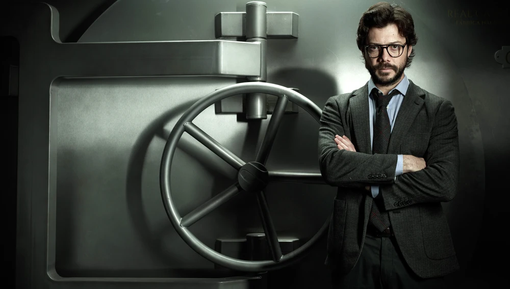
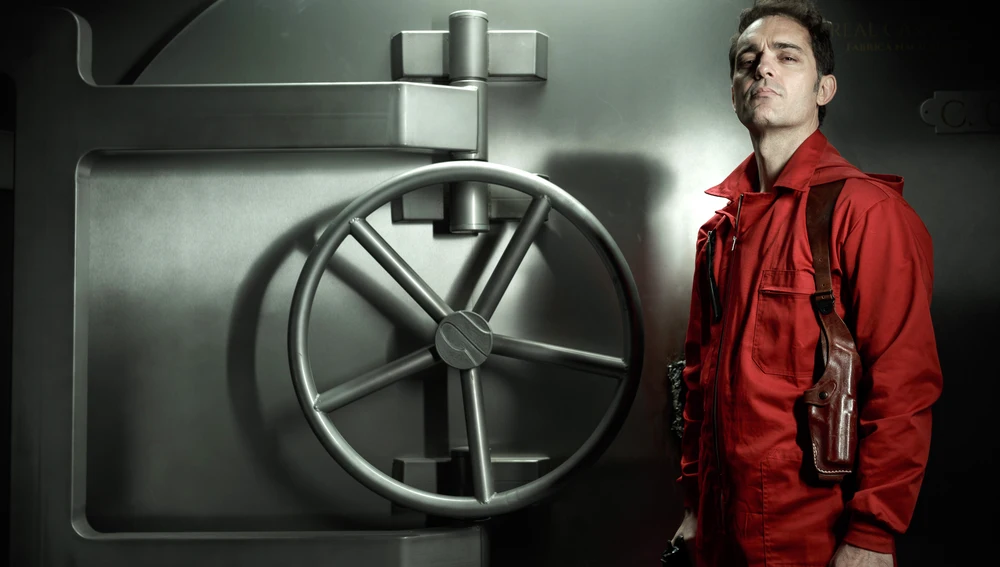

ACTIVIDAD BUENAS PRACTICAS
JOSE ADRIAN STTOR FIORILLO
4TO SEMESTRE ING.SISTEMAS
JUGAR FUTBOL Y VIDEOJUEGOS
LA CASA DE PAPEL

Ocho ladrones toman rehenes en la Fábrica Nacional de Moneda y Timbre de España, mientras el líder de la banda manipula a la policía para cumplir con su plan.
ACTORES RELEVANTES
Úrsula Corberó – Silene Oliveira «Tokio»
Úrsula Corberó interpreta a Tokio. Dura, impulsiva, con una aparente falta de empatía (aunque esto sólo sea una pose). Su vida siempre fue un balancín. Tokio ingresó en el mundo del crimen con 14 años siguiendo los pasos de su novio, de 28. Desde entonces ha alternado periodos de normalidad, con su empleo convencional, con otros ligados a todo tipo de atracos. Eso sí, cada vez más audaces. En uno de ellos, el asalto a una furgoneta de Prosegur, se vio envuelta en un tiroteo con el resultado de tres muertos, uno de ellos su novio. En búsqueda y captura desde entonces.
Álvaro Morte – Sergio Marquina Gonzalves «El Profesor»
Álvaro Morte interpretará a El profesor. Treintañero. Barba, gafas de pasta… El cerebro de la operación. Un hombre que nadie asociaría a priori a ningún plan criminal. Dialogante, de fina ironía y autodidacta, es la antítesis de cualquiera de los individuos que integran su banda. De inteligencia superior, ha planeado durante años hasta el mínimo detalle de la operación. Parece saberlo todo, anticiparse a todo desde su puesto de observación en el exterior. No obstante, no contaba con establecer un vínculo tan fuerte con la negociadora policial (Raquel), una mujer que le va a marcar.

Pedro Alonso – Andrés de Fonollosa Gonzalves «Berlín»
Pedro Alonso se pondrá en la piel de Berlín, el jefe al mando en el interior de la Fábrica de Moneda. Ladrón de guante blanco especializado en el robo de joyas. Ingresó en el mundo del crimen para mantener el altísimo nivel de vida al que estaba acostumbrado desde la cuna. Es un hombre que sabe tener modales finos, que se cree superior al resto de la banda, a quienes desprecia íntimamente. Pero también sabe ser brutal y directo cuando conviene. Su talón de Aquiles son las mujeres, y esta será la circunstancia que ponga en riesgo su liderazgo.

Alba Flores – Ágata Jiménez «Nairobi»
Alba Flores interpreta a Nairobi, una joven con una dura infancia que tuvo que ganarse la vida realizando falsificaciones. Embarazada y abandonada por un novio que tuvo en la adolescencia, no vio otra opción que el delito para salir adelante. Su faceta “creativa” le vino muy bien, y pronto era una cotizada falsificadora de todo tipo de cosas, siempre que tuvieran valor material. Tras pasar por prisión, perdió la custodia del pequeño. Con este golpe aspira a recuperarlo y retirarse con él a un lugar tranquilo.
Miguel Herrán – Aníbal Cortés «Río»
Miguel Herrán es Río, un chico que ha pasado su infancia programando y hackeando. Una adolescencia con la mirada en la Red. Esa capacidad y esos conocimientos le hicieron jefe técnico de una empresa de seguridad siendo aún muy joven. En lo personal, todo ese saber no vino acompañado de un grado de madurez equiparable. Así, pronto se vio metido en hackeos y roturas de sistemas de seguridad que poco tenían de juego. Terminó en búsqueda y captura por la Interpol, situación de la que le rescató El Profesor. Es el maestro tecnológico del grupo.